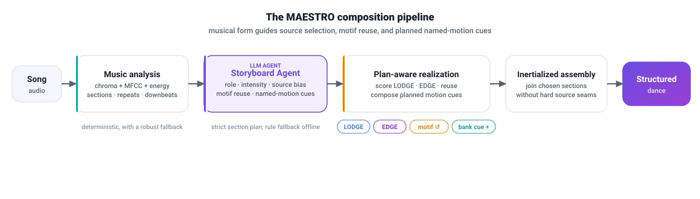
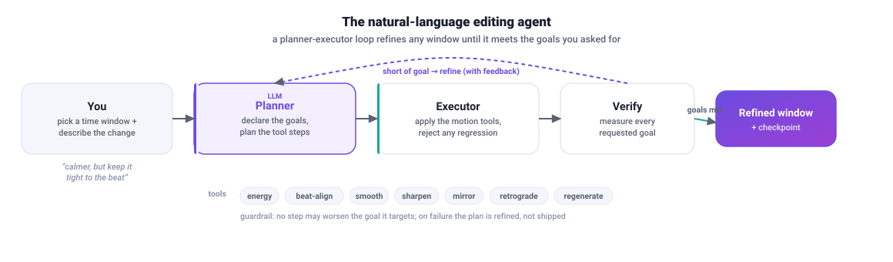
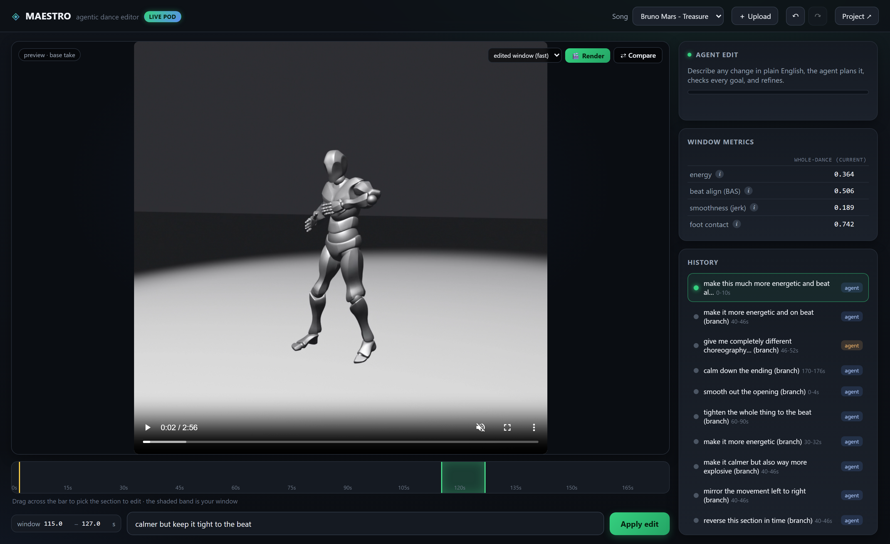

A training-free, agent-driven system that turns a song into a structured, well-composed dance, then lets you refine any moment of it with plain-English instructions.
MAESTRO generates dance from music without any task-specific training. It runs two complementary motion generators, LODGE and EDGE, then uses LLM agents to compose a single coherent performance rather than emit freestyle motion. A structure agent reads the song's musical form (intro, verse, chorus, drop, outro) and energy arc; a storyboard agent authors a per-section plan (role, intensity, movement vocabulary, preferred generator, and recurring motifs); and a structure-aware assembler realizes that plan by arranging LODGE and EDGE material, reusing and transforming motifs (mirror / retrograde) for recapitulation, and joining every switch with an inertialized blend. Finally, an interactive editor lets a user select any time window and refine it with natural language, with an agent that plans, verifies against the requested goals, and keeps the motion smooth. The result reads as a deliberately composed piece and, on beat alignment, matches or beats the stronger single generator.
Two LLM agents drive MAESTRO: a storyboard agent composes the dance, and a planner-executor editing agent revises any part of it on request.

The song is segmented into sections over chroma and MFCC, musically repeated sections are labeled, and an energy arc is built. Boundaries snap to downbeats.
An LLM authors a plan per section: its role in the arc, target intensity, movement vocabulary, preferred generator, and any motif to recall (optionally mirrored or reversed).
Per section, the assembler picks LODGE, EDGE, or a transformed motif that best matches the plan while staying smooth, joining every source change with an inertialized transition.

For each song: the 3-way comparison, the detected structure and per-section source, the storyboard, and the metrics.
Loading demos…
Refine any moment of the dance with natural language.

Select a time window on the beat-aligned timeline and describe the change in your own words: “calmer but keep it tight to the beat”, “explosive hits on the drop”, “flip and reverse this”. A planner and executor agent apply the edit, verify it against every requested goal, keep the motion smooth, and show their reasoning. Then compare the window before and after side by side.
@misc{maestro2026,
title = {MAESTRO: Music-to-motion Agent for Expressive, Structured, Text-guided Reasoning and Orchestration},
author = {MAESTRO contributors},
year = {2026},
note = {https://github.com/midotronn/MAESTRO}
}